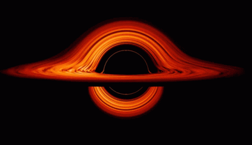
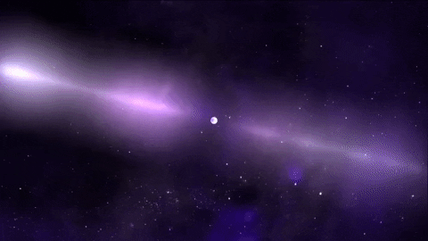

Negre
O regiune in spatiu-timp
Gaurile Negre
In o gaură neagră este o regiune în spațiu-timp cu o forță gravitațională atât de mare încât nimic nici măcar particulele și radiația electromagnetică ca lumina nu poate scăpa odată intrat în ea. Teoria relativității generale prezice că o masă suficient de compactă poate deforma spațiul și timpul astfel încât să formeze o gaură neagră. Limita fără evadare se numește orizont de evenimente. Deşi are un efect enorm asupra soartei şi circumstanțele unui obiect care îl traversează, conform relativității generale, nu are caracteristici detectabile local. În multe feluri, o gaură neagră acționează ca un corp negru ideal, deoarece nu reflectă lumina. Mai mult, teoria cuantică a câmpului este curbă spațiu-timp prezice că orizonturile evenimentelor emit radiații Hawking, cu același spectru ca un corp negru cu o temperatură invers proporțională la masa sa. Această temperatură este de ordinul miliardelor de kelvin pentru găurile negre de masă stelară, ceea ce face practic imposibil. a observa direct. Obiectele ale căror câmpuri gravitaționale sunt prea puternice pentru ca lumina să scape au fost luate în considerare pentru prima dată în secolul al XVIII-lea de către John Michell și Pierre Simon Laplace. A fost găsită prima soluție modernă de relativitate generală care ar caracteriza o gaură neagră de Karl Schwarzschild în 1916, iar interpretarea sa ca o regiune a spațiului din care nimic nu poate scăpa a fost publicată pentru prima dată de David Finkelstein în 1958. Găurile negre au fost mult timp considerate o curiozitate matematică; abia în anii 1960 lucrările teoretice au arătat că sunt o predicție generică a relativității generale. Descoperirea stelelor neutronice de către Jocelyn Bell Burnell în 1967 a stârnit interesul pentru obiecte compacte prăbușite gravitațional ca o posibilă realitate astrofizică. Prima gaură neagră cunoscută ca atare a fost Cygnus X-1, identificat de mai mulți cercetători în mod independent în 1971.
Gauri Negre in Calea Lactee
Marimea Aproximata
Cea mai mare Gaura Neagra
Tipuri de Gauri Negre
Poze cu Gauri Negre


-timp
Un model matematic care imbina cele trei dimensiuni ale spatiului si dimensiunea timpului intr-o singura varietate de patru dimensiuni.

Spatiu-timp
InÎn fizică, spațiul-timp este un model matematic care imbina cele trei
dimensiuni ale spațiului și dimensiunea unică a timpului într-o singură varietate cu
patru dimensiuni. Diagramele spațiu-timp pot fi folosite pentru a vizualiza efecte
relativiste, cum ar fi motivul pentru care diferiți observatori percep diferit unde și
când au loc evenimentele.
Până în secolul al XX-lea, se presupunea că geometria tridimensională a universului
(expresia sa spațială în termeni de coordonate, distanțe și direcții) era
independentă de timpul unidimensional. Fizicianul Albert Einstein a contribuit la
dezvoltarea ideii de spațiu-timp ca parte a teoriei relativității.
Înainte de munca sa de pioner, oamenii de știință aveau două teorii separate pentru
a explica fenomenele fizice:
Legile fizicii lui Isaac Newton au descris mișcarea obiectelor masive, în timp ce
modelele electromagnetice ale lui James Clerk Maxwell au explicat proprietățile luminii.
Cu toate acestea, în 1905, Einstein a bazat o lucrare despre relativitatea specială pe
două postulate:
- Legile fizicii sunt invariante (adică identice) în toate sistemele inerțiale (adică cadre de referință neaccelerante)
- Viteza luminii în vid este aceeași pentru toți observatorii, indiferent de mișcarea sursei de lumină.
Spatiul-timp continuu este infinit
Este teoretic posibil ca timpul sa fie curbat
Conform teoriei corzilor, universul are 10 dimensiuni.
Calatoria in timp este teoretic posibila
Gifuri cu Spatiul-timp


Neutronice
O rămășiță a colapsului gravitațional al unei stele supergigant masive
Stele Neutronice
In O stea neutronică este nucleul prăbușit al unei stele supergigant masive, care avea o masă totală cuprinsă între 10 și 25 de mase solare, posibil mai mult dacă steaua era deosebit de bogată în metale. Cu excepția găurilor negre și a unor obiecte ipotetice (de exemplu, găuri albe, stea cuartica și stele ciudate), Stelele neutronice sunt cea mai mică și mai densă clasă de obiecte stelare cunoscută în prezent. Stelele neutronice au o rază de ordinul a 10 kilometri (6,2 mi) și o masă de aproximativ 1,4 mase solare. Ele rezultă din explozia supernovei a unei stele masive, combinată cu colapsul gravitațional, care comprimă nucleul dincolo de densitatea stelei pitice albe până la cea a nucleelor atomice. Odată formate, nu mai generează în mod activ căldură, și se răcește în timp; cu toate acestea, ele pot evolua în continuare prin ciocnire sau acumulare. Majoritatea modelelor de bază pentru aceste obiecte implică faptul că stelele neutronice sunt compuse aproape în întregime din neutroni (particule subatomice fără sarcină electrică netă și cu masa puțin mai mare decât protonii); electronii și protonii prezenți în materia normală se combină pentru a produce neutroni în condițiile respective într-o stea neutronică. Stelele neutronice sunt parțial susținute împotriva colapsului ulterioară de către presiunea degenerativă a neutronilor, un fenomen descris de principiul excluderii Pauli, la fel cum piticele albe sunt susținute împotriva colapsului prin degenerarea electronilor presiune. Cu toate acestea, presiunea de degenerare a neutronilor nu este suficientă în sine pentru a susține un obiect peste 0,7 M☉ și pentru a respinge nucleare. forțele joacă un rol mai important în susținerea unor stele neutronice mai masive. Dacă steaua rămasă are o masă care depășește Tolman Oppenheimer Volkoff limită de aproximativ 2 mase solare, combinația dintre presiunea degenerativă și forțele nucleare este insuficientă pentru a susține neutronul stea și continuă să se prăbușească pentru a forma o gaură neagră. Cea mai masivă stea neutronică detectată până acum, PSR J0740+6620, este estimată la 2,14 mase solare.
Stele Neutron in Calea Lactee
Steaua Neutronica care se invarte cel mai repede
Cea mai mica Stea Neutron
Densitatea medie a unei Stele Neutron